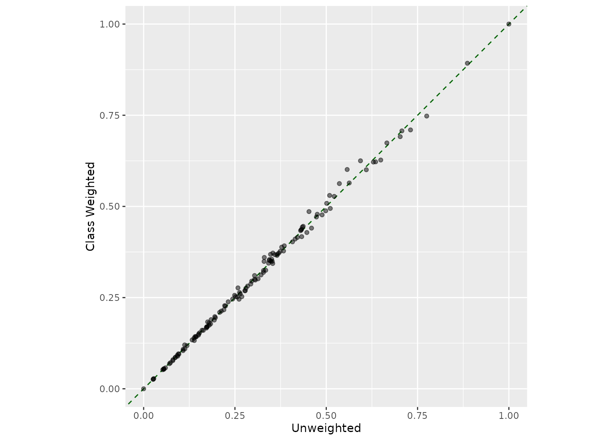

Supervised Multivariate Feature Selection via Desirability Functions
Source:R/step_predictor_desirability.R
step_predictor_desirability.Rdstep_predictor_desirability() creates a specification of a recipe step
that uses one or more "score" functions to measure how much each predictor
is related to the outcome value. These scores are combined into a composite
value using user-specified desirability functions and a proportion of the
most desirable predictors are retained.
Usage
step_predictor_desirability(
recipe,
...,
score,
role = NA,
trained = FALSE,
prop_terms = 0.5,
update_prop = TRUE,
results = NULL,
removals = NULL,
skip = FALSE,
id = rand_id("predictor_desirability")
)Arguments
- recipe
A recipe object. The step will be added to the sequence of operations for this recipe.
- ...
One or more selector functions to choose variables for this step. See
selections()for more details.- score
An object produced by
desirability2::desirability()that uses one or more score functions from the filtro package. See the Details and Examples sections below. This argument should be named when used.- role
Not used by this step since no new variables are created.
- trained
A logical to indicate if the quantities for preprocessing have been estimated.
- prop_terms
The proportion of predictors that should be retained when ordered by overall desirability. A value of
hardhat::tune()can also be used.- update_prop
A logical: should
prop_termsbe updated so that at least one predictor will be retained?- results
A data frame of score and desirability values for each predictor evaluated. These values are not determined until
recipes::prep()is called.- removals
A character string that contains the names of predictors that should be removed. These values are not determined until
recipes::prep()is called.- skip
A logical. Should the step be skipped when the recipe is baked by
bake()? While all operations are baked whenprep()is run, some operations may not be able to be conducted on new data (e.g. processing the outcome variable(s)). Care should be taken when usingskip = TRUEas it may affect the computations for subsequent operations.- id
A character string that is unique to this step to identify it.
Value
An updated version of recipe with the new step added to the
sequence of any existing operations. When you
tidy() this step, a tibble::tibble is returned
with columns terms and id:
- terms
character, the selectors or variables selected to be removed
- id
character, id of this step
Once trained, additional columns are included (see Details section).
Details
This recipe step can compute one or more scores and conduct a simultaneous
selection of the top predictors using desirability functions. These are
functions that, for some type of goal, translate the score's values to a
scale of [0, 1], where 1.0 is the best result and 0.0 is unacceptable.
Once we have these for each score, the overall desirability is computed
using the geometric mean of the individual desirabilities. See the examples
in desirability2::d_overall() and desirability2::d_max().
To define desirabilities, use desirability2::desirability() function to
define goals for each score and pass that to the recipe in the score
argument.
Scoring Functions
As of version 0.2.0 of the filtro package, the following score functions are available:
aov_fstat(documentation)aov_pval(documentation)cor_pearson(documentation)cor_spearman(documentation)gain_ratio(documentation)imp_rf(documentation)imp_rf_conditional(documentation)imp_rf_oblique(documentation)info_gain(documentation)roc_auc(documentation)sym_uncert(documentation)xtab_pval_chisq(documentation)xtab_pval_fisher(documentation)
Some important notes:
Scores that are p-values are automatically transformed by filtro to be in the format
-log10(pvalue)so that a p-value of 0.1 is converted to 1.0. For these, use themaximize()goal.Other scores are also transformed in the data. For example, the correlation scores given to the recipe step are in absolute value format. See the filtro documentation for each score.
You can use some in-line functions using base R functions. For example,
maximize(max(cor_spearman)).If a predictor cannot be computed for all scores, it is given a "fallback value" that will prevent it from being excluded for this reason.
This step can potentially remove columns from the data set. This may cause issues for subsequent steps in your recipe if the missing columns are specifically referenced by name. To avoid this, see the advice in the Tips for saving recipes and filtering columns section of recipes::selections.
Ties
Note that dplyr::slice_max() with the argument with_ties = TRUE is used
to select predictors. If there are many ties in overall desirability, the
proportion selected can be larger than the value given to prep_terms().
Case Weights
Case weights can be used by some scoring functions. To learn more, load the
filtro package and check the case_weights property of the score object
(see Examples below). For a recipe, use one of the tidymodels case weight
functions such as hardhat::importance_weights() or
hardhat::frequency_weights, to assign the correct data type to the vector of case
weights. A recipe will then interpret that class to be a case weight (and no
other role). A full example is below.
Tidy method
For a trained recipe, the tidy() method will return a tibble with columns
terms (the predictor names), id, columns for the estimated scores, and
the desirability results. The score columns are the raw values, before being
filled with "safe values" or transformed.
The desirability columns will have the same name as the scores with an
additional prefix of .d_. The overall desirability column is called
.d_overall.
There is an additional local column called removed that notes whether the
predictor failed the filter and was removed after this step is executed.
References
Derringer, G. and Suich, R. (1980), Simultaneous Optimization of Several Response Variables. Journal of Quality Technology, 12, 214-219.
https://desirability2.tidymodels.org/reference/inline_desirability.html
Examples
library(recipes)
library(desirability2)
if (rlang::is_installed("modeldata")) {
# The `ad_data` has a binary outcome column ("Class") and mostly numeric
# predictors. For these, we score the predictors using an analysis of
# variance model where the predicor is the outcome and the outcome class
# defines the groups.
# There is also a single factor predictor ("Genotype") and we'll use
# Fisher's Exact test to score it. NOTE that for scores using hypothesis
# tests, the -log10(pvalue) is returned so that larger values are more
# important.
# The score_* objects here are from the filtro package. See Details above.
goals <-
desirability(
maximize(xtab_pval_fisher),
maximize(aov_pval)
)
example_data <- modeldata::ad_data
rec <-
recipe(Class ~ ., data = example_data) |>
step_predictor_desirability(
all_predictors(),
score = goals,
prop_terms = 1 / 2
)
rec
# Now evaluate the predictors and rank them via desirability:
prepped <- prep(rec)
prepped
# Use the tidy() method to get the results:
predictor_scores <- tidy(prepped, number = 1)
mean(predictor_scores$removed)
predictor_scores
# --------------------------------------------------------------------------
# Case-weight example: use the hardhat package to create the appropriate type
# of case weights. Here, we'll increase the weights for the minority class and
# add them to the data frame.
library(hardhat)
example_weights <- example_data
weights <- ifelse(example_data$Class == "Impaired", 5, 1)
example_weights$weights <- importance_weights(weights)
# To see if the scores can use case weights, load the filtro package and
# check the `case_weights` property:
library(filtro)
score_xtab_pval_fisher@case_weights
score_aov_pval@case_weights
# The recipe will automatically find the case weights and will
# not treat them as predictors.
rec_wts <-
recipe(Class ~ ., data = example_weights) |>
step_predictor_desirability(
all_predictors(),
score = goals,
prop_terms = 1 / 2
) |>
prep()
rec_wts
predictor_scores_wts <-
tidy(rec_wts, number = 1) |>
select(terms, .d_overall_weighted = .d_overall)
library(dplyr)
library(ggplot2)
# The selection did not substantially change with these case weights
full_join(predictor_scores, predictor_scores_wts, by = "terms") |>
ggplot(aes(.d_overall, .d_overall_weighted)) +
geom_abline(col = "darkgreen", lty = 2) +
geom_point(alpha = 1 / 2) +
coord_fixed(ratio = 1) +
labs(x = "Unweighted", y = "Class Weighted")
}
